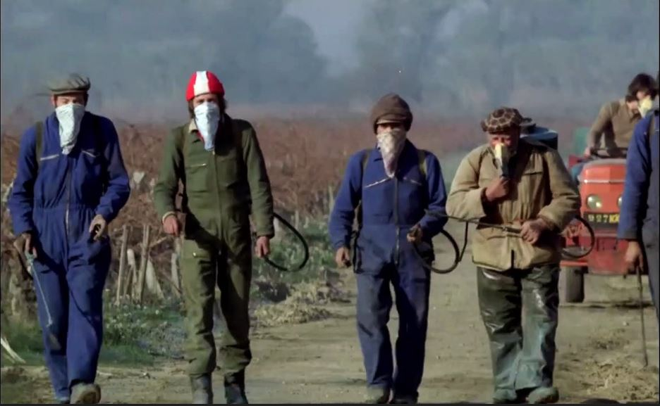
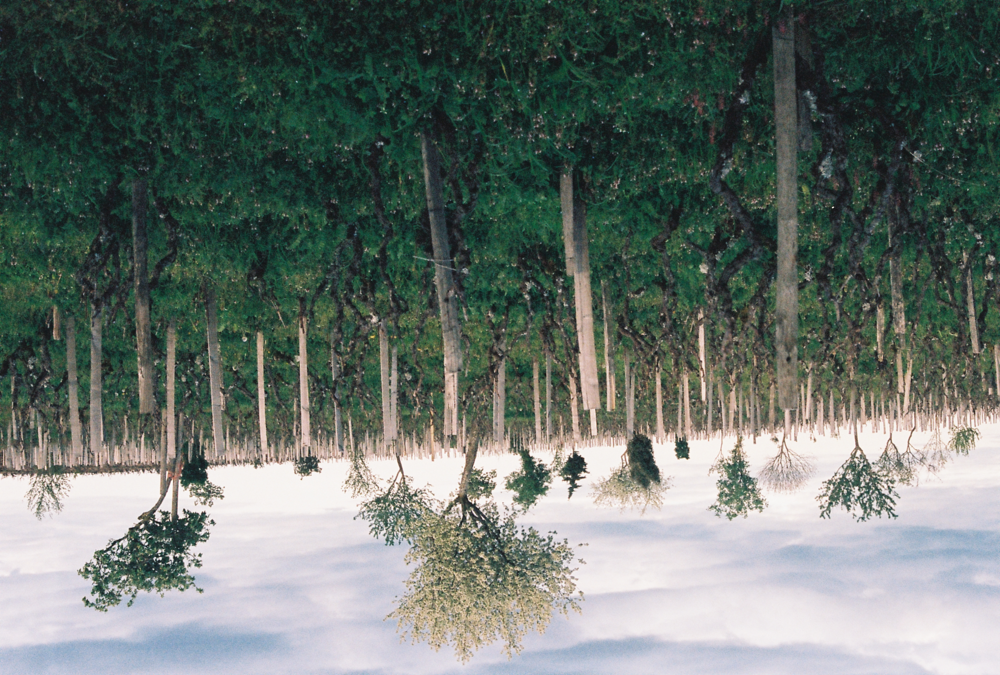

Waar geen vogels zingen: een wijngaard in verval
Een zonnige, herfstige dag op de wijngaard, een bekend tafereel: verschillende tinten bruin, kale ranken en bladeren op de grond, en toch krijgt het landschap iets vreemds door de aanwezigheid van een groep mannen die zich zwijgend tussen de ranken voortbewegen. ...
Read More